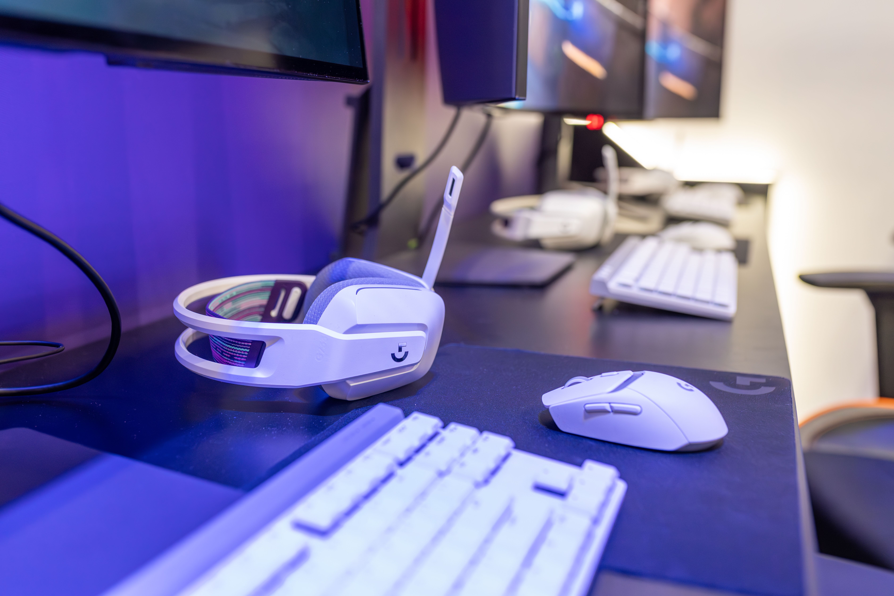
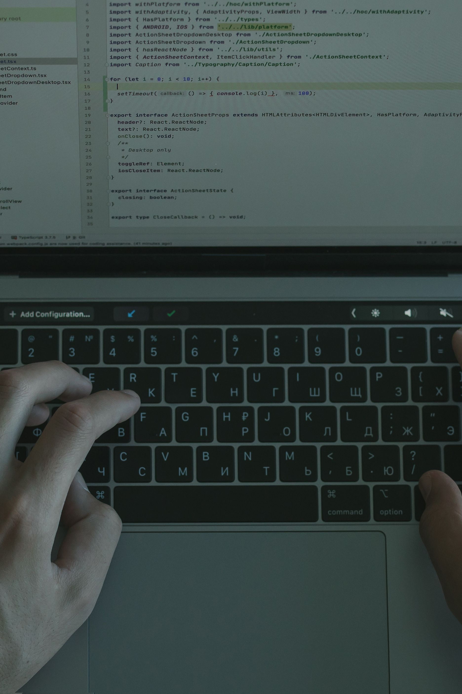

My Responsive Portfolio
Welcome to my portfolio. This page showcases my interests, education, and experience with computer programming, web development, and technology. The images represent areas of technology that are important to my education and career goals.
Programming is an important part of my education. My coursework gives me opportunities to write code, solve problems, and develop programming skills.

Gaming is one of my interests and has increased my curiosity about computers, software, graphics, and interactive technology.
I am working toward a Computer Programmer Certificate while developing my skills in programming and computer applications.
Technology is an important part of my education and future career goals. I am interested in learning how technology can be used to solve problems.
My coursework has allowed me to practice HTML, webpage design, images, hyperlinks, navigation, and responsive webpage development.

Web development is one of the areas I am studying. I am continuing to improve my HTML, CSS, and webpage development skills.
My Portfolio Goals
My goal is to continue building my programming and web development skills by creating projects that demonstrate what I learn in college. I want this portfolio to grow as I complete more coursework and gain additional experience with technology.
I am especially interested in programming, databases, and web development. Building projects throughout college will help me develop a collection of work that represents my technical skills.